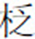
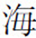

景宋本方言一本 五·二〇 一月一日
方言疏证四本 二·〇〇
元遗山集十六本 一〇·八〇
诗经世本古义十六本 二·〇〇 一月三日
南菁札记四本 三·〇〇
ジョイス中心の文学運動一本 二·五〇 一月四日
ヂイド文蕓評論一本 二·五〇 一月六日
又 文蕓評論一本 二·〇〇
文蕓評論一本 二·〇〇
又ドストエフスキー論一本 一·八〇
靖节先生集四本 一·二〇
洛阳伽蓝记鉤沈二本 一·〇〇
ドストエフスキイ研究一本 二·〇〇 一月八日
景宋本宋书三十六本 豫约 一月九日
景宋本南齐书十四本 同上
景宋本梁书十四本 同上
景宋本陈书八本 同上
以俅画集一本 作者赠 一月十日
芸術上のレアリズム一本 一·〇〇 一月十六日
科学随想一本 一·四〇
細胞学概論一本 〇·八〇 一月二十日
人体解剖学一本 〇·八〇
生理学（上）一本 〇·八〇
殷墟出土白色土器の研究一本 八·〇〇 一月二十四日

禁の考古学的考察一本 八·〇〇園芸植物図譜（五）一本 三·〇〇 一月二十六日
白と黑（四十三）一本 〇·五〇
思索と随想一本 一·八〇 一月二十八日
默庵集锦二本 四·〇〇
ソヴェト大学生の性生活一本 一·〇〇 一月二十九日
結婚及ビ家族の社会学一本 一·〇〇
国立剧场一百年一本 小山寄来
D.Kardovsky画集一本 同上
Bala Jiz画集一本 同上
鳥類原色大図説（二）一本 八·〇〇 一月三十一日
版芸術（二月号）一本 〇·五〇
版畫（一至四）四帖 山本夫人寄赠八一·六〇〇
露西亜文学研究（第一辑）一本 一·五〇 二月一日
重雕芥子园画谱三集一部 豫约 二四·〇〇 二月三日
四部丛刊续编一部 预约 一三五·〇〇
群经音辨二本 前书之内
愧郯录四本 同上
桯史三本 同上
饮膳正要三本 同上
宋之问集一本 同上
东莱先生诗集四本 同上
平斋文集十本 同上
雍熙乐府二十本 同上
汗简一本 同上 二月六日
叠山集二本 同上
张光弼诗集二本 同上
只野凡儿漫畫（一）一本 一·〇〇 二月十日
司马温公年谱四本 三·〇〇
山谷外集诗注八本 豫约 二月十二日
日本廿六聖人殉教记一本 一·〇〇 二月十五日
東方学報（京都第四册）一本 四·〇〇 二月十六日
東方学報（同第三册）一本 三·五〇 二月十九日
作邑自箴一本 豫约
挥麈录六本 同上
生物学講座補正八本 四·〇〇 二月二十日
白と黑（四十四）一本 〇·五〇
チェーホフ全集（一）一本 二·五〇 二月廿六日
梅亭四六标准八本 豫约已付
東洋古代社会史一本 〇·五〇 二月二十七日
 書放浪一本 二·〇〇二〇二·五〇〇
書放浪一本 二·〇〇二〇二·五〇〇
ドストイエフスキイ全集（八及九）二本 五·〇〇 三月一日
白と黑（四十五）一本 〇·五〇 三月五日
云溪友议一本 豫约已付
云仙杂记一本 同上
石屏诗集五本 同上
版芸術（三月号）一本 〇·五〇 三月八日
東方の詩一本 作者寄赠 三月十二日
张子语录一本 豫约 三月十三日
龟山语录二本 同上
东皋子集一本 同上
仏蘭西精神史の一側面一本 二·八〇 三月十六日
仏教ニ于ケル地獄ノ新研究一本 一·〇〇 三月十八日
许白云文集一本 付讫 三月十九日
存复斋文集二本 同上
人形図篇一本 二·五〇 三月二十一日
三唐人集六本 四·〇〇 三月二十二日
ダーウイン主義とマルクス主義一本 一·七〇 三月二十五日
右文说在训诂学上之沿革一本 兼士寄赠 三月二十六日
梦溪笔谈四本 豫约
ドストイエフスキイ全集（十三）一本 二·五〇 三月二十九日
チェーホフ全集（二）一本 二·五〇
芥子园画传四[三]集四本 豫约 三月三十一日
嘉庆重修一统志二百本 豫约二三·〇〇〇
版芸術（四月号）一本 〇·五〇 四月九日
韦斋集三本 豫约
ツルゲェネフ散文詩（普及版）一本 〇·五〇 四月十日
Das Neue Kollwitz-Werk一本 六·〇〇 四月十四日
周贺诗集李丞相诗集合一本 豫约
朱庆馀诗集一本 同上
獍人日記（下卷）一本 二·五〇 四月十九日
范声山杂著四本 〇·八〇 四月二十日
芥子园画传初集五本 三·二〇
芥子园画传二集四本 六·〇〇
白と黑（四十六）一本 〇·五〇 四月二十一日
马氏南唐书四本 先付 四月二十三日
陆氏南唐书三本 同上
中国文学论集一本 作者赠 四月二十五日
淶洲畫帖一函二本 三·〇〇
鳥類原色大図説（三）一本 八·〇〇 四月二十七日
ドストイエフスキイ集（十一）一本 二·五〇
チェーホフ全集（三）一本 二·五〇
世界原始社会史一本 二·〇〇 四月二十八日
括异志二本 豫约 四月二十九日
续幽怪录一本 同上三八·〇〇〇
現代蘇ヴエト文学概論一本 一·二〇 五月一日
日本玩具史篇一本 二·五〇 五月四日
萧冰厓诗集拾遗二本 豫约 五月七日
青阳文集一本 同上
長安史跡の研究一本図一帙 一三·〇〇 五月九日
六祖坛绖及神会師語録一帙四本 铃木大拙师赠 五月十日
版芸術（五月分）一本 〇·五〇 五月十一日
白と黑（四十七）一本 〇·五〇 五月十三日
仰视千七百二十九鹤斋丛书一部 一七·〇〇 五月十四日
公是先生七经小传一本 豫约
祝蔡先生六十五岁论文集（上）一本 季巿寄来 五月二十一日
尔雅疏二本 豫约
史学概論一本 一·二〇 五月二十三日
ドストエーフスキイ再観一本 一·六〇
石印白岳凝烟一本 文求堂寄来
ドストイエフスキイ全集（一）一本 二·七〇 五月二十五日
Art Young's Inferno一本 一六·三〇 五月二十六日
吕氏家塾读诗记十二本 豫约
古代铭刻汇考续编一本 三·五〇 五月二十八日
唯美主義の研究一本 八·〇〇
チェーホフ全集（十三）一本 二·五〇 五月三十一日
版芸術（六月分）一本 〇·五〇七一·〇〇〇
清文字狱档（七及八）二本 一·〇〇 六月一日
补图承华事略一本 七·〇〇 六月二日
石印耕织图二本 一·五〇
金石萃编补略四本 一·五〇
八琼室金石补正六十四本 六〇·〇〇
啸堂集古录二本 预约
ゴオゴリ全集（一）一本 二·五〇 六月六日
にんじん一本 一·〇〇
“Capital”in Lithographs一本 一〇·〇〇
ダァツヱンカ一本 三·五〇 六月八日
にんじん（特制本）一本 一五·〇〇 六月十一日
悲劇の哲学一本 二·二〇
新興仏蘭西文学一本 二·〇〇
读四书丛说三本 豫约
顾虎头画列女传四本 一二·〇〇 六月十五日
小学大全五本 〇·六〇
淞滨琐话四本 一·二〇
圆明园图咏二本 二·〇〇 六月十六日
北山小集十本 预约
白と黑（四十八）一本 〇·五〇 六月二十二日
清波杂志二本 预约 六月二十三日
死せる魂一本 二·〇〇 六月二十四日
淞隐漫录六本 七·〇〇 六月二十六日
海上名人画稿二本 二·〇〇
西洋玩具図篇一本 二·五〇 六月二十八日
ドストイエフスキイ全集一本 二·五〇
版芸術（七月特辑）一本 〇·五〇 六月二十九日
残淞隐续录等四本 三·六〇 六月二十八日
切韵指掌图一本 预约 六月三十日一四四·六〇〇
沈君阙铭并画象二枚 二·〇〇 七月一日
此齐王也画象一枚 一·五〇
孔府画象一枚 一·〇〇
颜府画象一枚 一·五〇
朱鲔石室画象二十六枚 九·〇〇
巨砖画象二枚 一·〇〇
魏铜床画象八枚 一四·〇〇
オブロモーフ（前编）一本 二·二〇 七月四日
チェーホフ全集（四）一本 一·五〇 七月五日
汉丞相诸葛武侯传一本 预约 七月七日
嘉庆一统志索引十本 同上
ゴオゴリ全集（三）一本 二·五〇 七月八日
白と黑（四十九）一本 〇·五〇 七月十日
陣中の竪琴一本 三·〇〇 七月十二日
紙魚繁昌記一本 三·〇〇
汉龙虎画象二幅 一·五〇 七月十四日
魏悟安造象四幅 一·五〇
齐天保砖画象二幅 〇·八〇
元城先生尽言集四本 预约
金時計一本 一·〇〇 七月十九日
創作版畫集一本 六·〇〇
Spiesser-Spiegel（普及版）一本 五·〇〇
K.Kollwitz-Werk一本 一三·二〇
世界史教程（三）一本 一·三〇 七月二十日
张蜕庵诗集一本 预约 七月二十一日
ツルゲーネフ全集（五）一本 一·五〇 七月二十三日
ドストイエフスキイ全集（三）一本 二·五〇 七月二十五日
影明钞急就篇一本 预约 七月三十日七九·〇〇〇
ツルゲーネフ全集一本 一·八〇 八月一日
版芸術（八月分）一本 〇·五〇
春秋左传类编三本 豫约 八月四日
蜀龟鉴四本 钦文赠 八月六日
鄉土玩具集（一至三）三本 一·五〇 八月七日
白と黑（五十号终刊）一本 〇·五〇 八月十一日
麟台故事残本一本 预约
ゴオゴリ全集（二）一本 二·五〇 八月十三日
Gogol：Briefwechsel二本 一三·二〇
棠阴比事一本 预约 八月二十〖一〗日
東方学報（京都五）一本 二·〇〇 八月二十二日
女一人大地ラ行ク一本 译者赠 八月二十四日
贞观政要四本 豫约 八月二十五日
ドストイエフスキイ全集（十四）一本 二·五〇 八月二十六日

の童話一本 一·四〇版芸術（九月分）一本 〇·五〇 八月二十八日二六·四〇〇
图画见闻志一本 预约 九月一日
ツルゲーネフ全集（四）一本 一·八〇 九月二日
清人杂剧二集十二本 西谛赠
辞通（下册）一本 预约 九月四日
チェーホフ全集（七）一本 二·五〇 九月六日
吴越备史二本 预约 九月八日
Grimm：Märchen一本 七·五〇 九月十日
Neues W.Busch Album一本 一四·〇〇
虚無よリの創造一本 一·五〇 九月十二日
春秋胡氏传四本 预约 九月十五日
無からの創造一本 一·五〇 九月十六日
モンテエニエ論一本 五·〇〇
王 の背中一本 一·二〇
の背中一本 一·二〇
The Chinese Soviets一本 译者寄赠 九月十九日
A.Kravchenko木刻十五幅 作者寄赠
玩具工業篇一本 二·五〇 九月二十日
先天集二本 豫约 九月二十二日
ゴーゴリ全集（四）一本 二·五〇 九月二十四日三〇·〇〇〇
版芸術（十月分）一本 〇·五〇 十月一日
法书考一本 豫约
安徽丛书三集十八本 一〇·〇〇 十月四日
ドストイエフスキイ集（二）一本 二·五〇 十月五日
仰视鹤斋丛书六函三十六本 豫约 十月六日
吴骚合编四本 豫约 十月七日
冈察罗夫木刻十四幅 作者寄 十月九日
ツルゲーネフ全集（十四）一本 二·五〇 十月十二日
ドーソン蒙古史一本 六·〇〇 十月十三日
郑守愚文集一本 豫约
ジイド全集（四）一本 二·六〇 十月十八日
物質と悲劇一本 一·八〇 十月十九日
雪窦四集二本 豫约 十月二十日
生物学講座補遺八本 四·〇〇 十月二十四日
支那社会史一本 二·五〇
汉上易传八本 预约 十月二十七日
支那仏教印象記一本 作者赠 十月二十八日
版芸術（三之十一）一本 〇·五〇 十月二十九日
ゴーゴリ全集（五）一本 二·五〇
モリエール全集（一）一本 二·五〇 十月三十一日
牧野植物学全集（一）一本 六·五〇四四·四〇〇
ドストイエフスキイ全集（六）一本 二·五〇 十一月二日
王の背中（豪华版）一本 三·五〇 十一月三日
園芸植物図譜（六）一本 二·八〇
革命前一幕一本 良友图书公司赠
欧行日记一本 同上
三垣笔记四本 一·六〇
安龙逸史一本 〇·三二〇
订讹类编四本 一·九〇〇
朴学斋笔记二本 〇·八〇
云溪友议二本 一·一二〇
闲渔闲闲录一本 〇·五六〇
翁山文外四本 一·九二〇
咄咄吟一本 〇·四八〇
权斋笔记附文存二本 〇·六四〇
诗筏一本 〇·四〇
渚山堂词话一本 〇·一六〇
王荆公年谱二本 〇·八〇
横阳札记四本 一·六〇
蕉乡[廊]脞录四本 一·二八〇
武梁祠画象考二本 四·八〇
チェーホフ全集（八）一本 二·五〇 十一月五日
芸術社会学一本 一·五〇
雨窗欹枕集二本 马隅卿寄赠 十一月十日
モリエール全集（二）一本 二·五〇 十一月十一日
田園詩シモオヌ一本 五·〇〇
程氏读书分年日程二本 豫约 十一月十三日
孔氏祖庭广记三本 同上
沈忠敏龟溪集四本 同上
ジイド全集七本 一八·二〇 十一月十四日
英文动物学教本三本 四二·〇〇
仪礼疏八本 预约 十一月十七日
礼部韵略三本 同上
范香溪文集五本 同上
汉画象残石拓片四幅 四·〇〇 十一月十九日
红楼梦图咏四本 五·四〇 十一月二十日
纫斋画四本 三·六〇
河朔访古新录附碑目四本 三·〇〇
安阳发掘报告（四）一本 一·五〇
郑菊山清隽集一本 豫约 十一月二十四日
嵩山晁景迂集十本 同上
N.Gogol's Sämt.Werk五本 一五·〇〇 十一月二十七日
ドストイエフスキイ全集（十）一本 二·五〇 十一月卅日
一一四·五〇〇
蜀碧二本 钦文赠 十二月一日
清石刻薛涛象拓片一枚 同上
容斋随笔至五笔十二本 豫约
版芸術（十二月号）一本 〇·五〇 十二月八日
龙龛手鉴三本 豫约 十二月八日
金石录五本 同上
ゴオゴリ全集（六）一本 二·五〇 十二月十二日
ツルゲーネフ全集（一）一本 一·八〇 十二月十四日
ジイド全集（十一）一本 二·五〇
周易要义三本 豫约 十二月十五日
礼记要义十本 同上
茗斋集附明诗钞三十四本 豫约 十二月二十二日
阿難と鬼子母一本 五·〇〇 十二月二十六日
書 の岳人一本 三·三〇
の岳人一本 三·三〇
贵池二妙集十二本 五·六〇 十二月二十七日
版芸術（明年正月分）一本 〇·五〇 十二月二十八日
春秋正义十二本 豫约 十二月二十九日
焓草一本 二·五〇 十二月三十日
晋书二十四本 豫约 十二月三十一日
魏书五十本 同上
北齐书十本 同上
周书十二本 同上二四·二〇〇
本年共用买书钱八百七十八元七角，
平均每月七十三元二角四分强也。
[1] 宜宾 即瞿秋白。瞿因将赴江西瑞金中央根据地，来与鲁迅叙别。
[2] 烈文招饮于古益轩 《申报·自由谈》新年招待作者。出席者有鲁迅、郁达夫、林语堂、陈子展、唐弢、曹聚仁、周木斋等。
[3] 《Ubangi》 中译名《兽国奇观》。非洲探险纪录片。美国皮洛尔公司1931年出品。
[4] ABCベカーリ 日记又作ABC茶店、ABC吃茶店，位于北四川路狄思威路附近。
[5] 即《未来的光荣》、《女人未必多说谎》。后均收入《花边文学》。
[6] 墨斯克跋 即莫斯科。鲁迅自1931年起，通过曹靖华向苏联莫斯科和列宁格勒的版画家搜求木刻作品，编成《引玉集》，即将出版。本日所寄书为对苏联版画家的回赠。参看《集外集拾遗·〈引玉集〉后记》。
[7] 即《答杨邨人先生公开信的公开信》。此文寄沙汀、魏猛克等人拟办之文学杂志，因该刊未办成，故未发表，后收入《南腔北调集》。
[9] 《访笺杂记》 郑振铎写的访购笺纸的记事文。经鲁迅提议，印入《北平笺谱》。
[10] 英译木刻目录 即鲁迅收集的中国左翼美术工作者版画五十八幅的目录，由姚克译成英文。次日将此目录及五十八幅作品寄给谭丽德女士，拟在巴黎、莫斯科等地举办《革命的中国之新艺术》木刻展。
[11] 即《批评家的批评家》、《漫骂》。后均收入《花边文学》。
[12] 即《关于中国的两三件事》（原题《火·王道·监狱》）。后收入《且介亭杂文》。
[13] 即《“京派”与“海派”》、《北人与南人》。后均收入《花边文学》。
[15] 志贺廼家淡海剧团 日本一个演出讽刺话剧的剧团。团长志贺廼家淡海。
[16] 《引玉集》序跋 序，即陈节（瞿秋白）摘译苏联楷戈达耶夫作《十五年来的书籍版画和单行版画》，作为该书《代序》；跋，即鲁迅作《〈引玉集〉后记》，后收入《集外集拾遗》。
[17] 是日及次日往ABC茶店，都是为介绍曹靖华与上海“左联”的朋友见面。
[19] 京都大学 即京都帝国大学。日本的一所国立大学。1898年创设于京都。
[20] 所观电影为《龙虎斗》（Beyond Bengal），美国休曼斯社1934年出品。威利大戏院，在乍浦路海宁路口。
[21] 所观电影为《菲洲孔果国》（Kango），探险片，美国米高梅影片公司1932年出品。孔果，通译刚果。
[22] 所观电影为《菲洲小人国》（Congorilla），探险片，美国福克斯影片公司1932年出品。
[24] 天下篇半月刊社 天津的一家杂志社。1934年2月创办《天下篇》半月刊。
[27] 《锦绣天》 原名《Flying Down to Rio》，歌舞片，美国雷电华影片公司1933年出品。
[28] 1934年3月10日天津《大公报》“文化情报”栏刊载署名“乒”的简讯，说鲁迅“忽患脑病，时时作痛，并感到一种不适。经延医证实确系脑病，为重性脑炎。……”
[31] 《兽王历险记》 原名《Jungle Adventure》，探险片，美国好莱坞出品。
[33] 所观电影为《泰山之王》（Tarzan the Fearless），美国普林斯波影片公司1933年出品。
[34] 同文局 指同文书局，日记又作同文书店，为联华书局另一用名。本日所得书，即由该局出版的《南腔北调集》。
[35] 卢氏传略 即卢那察尔斯基小传。后印入《解放了的董吉诃德》一书。
[36] 所观电影为《云裳艳曲》（Fashions of 1934），歌舞片，美国影片公司1934年出品。
[38] 《四十二号街》 原名《Forty-Second Street》，歌舞片，美国华纳兄弟影片公司1933年出品。
[39] 其一为《“小童挡驾”》，后收入《花边文学》；另一篇未详。
[40] 《万兽之王》 原名《King of the Jungle》，探险片，美国派拉蒙影片公司1933年出品。
[41] 《罗京管乐》 英文名《The Song of the Sun》，德国音乐歌唱片。
[42] 为南宁博物馆书一幅。文为：“风号大树中天立，日薄沧溟四海孤。杖策且随时旦暮，不堪回首望菰蒲。偶忆此诗而忘其作者 鲁迅”。此诗为明项圣谟作，题在《大树风号图》上。“沧溟”原作“西山”，“杖策”原作“短策”，“旦暮”写作“旦莫”。据鲁迅所存寄件回执的邮戳，寄件日应为4月9日。
[43] 《泥沙杂拾》 随笔，闲斋（徐诗荃）作，经鲁迅介绍连载于《人间世》半月刊第三至第六期，第十八、十九期（1934年5月至6月，1934年12月、1935年1月）。
[44] 《凯赛琳女皇》 原名《Catherrine the Great》，故事片，美国联美影片公司1934年出品。
[45] 《亡命者》 原名《I Am a Fugitive from a Chain Gang》，故事片，美国华纳兄弟影片公司1932年出品。
[47] 《虎魔王》 原名《Devil Tiger》，关于马来半岛丛林的探险片，美国福克斯影片公司1934年出品。
[48] 即《洋服的没落》、《朋友》。后均收入《花边文学》。
[50] 即《清明时节》、《小品文的生机》。前篇未能在《自由谈》发表，5月18日转寄《动向》。两文后均收入《花边文学》。
[52] 其一为《论“旧形式的采用”》（文末署“五月二日”），后收入《且介亭杂文》；另一篇未详。
[53] 嘉业堂 浙江吴兴藏书家刘承傒的藏书室名，亦营雕版印书。址在吴兴南浔镇。上海有分室，在爱文义路卡德路（今北京西路石门二路）刘宅附近。刘于1914年为清皇陵植树捐巨资，得废帝溥仪赏赐“钦若嘉业”匾额，遂以名室。
[54] 《拉斯普丁》 原名《Rasputin and the Empress》，以旧俄宫廷生活为背景的故事片，美国米高梅影片公司1932年出品。
[55] 《阿丽思漫游奇境记》 原名《Alice in Wonderland》，据卡罗尔的同名童话改编的故事片，美国派拉蒙影片公司1933年出品。
[56] 其一为《刀“式”辩》，后收入《花边文学》；另一篇未详。
[58] 指《唐宋传奇集》版税印花。该书于1934年由联华书局出版合订本。
[59] 即《一思而行》、《读几本书》及《推己及人》、《法会和歌剧》。后均收入《花边文学》。
[60] 指《巴黎之烦恼》，当时石民因需款治肺疾，拟将所译法国波特莱尔散文诗《巴黎之烦恼》版权售与北新书局未成，乃托鲁迅设法。鲁迅预付其稿费二百五十元，后介绍给生活书店，于1935年4月出版。
[62] 洪洋社 日本东京的一家出版社。鲁迅曾托该社印刷《引玉集》。
[64] 千秋社 上海杂志社，设在昆山路。1933年6月创刊文艺半月刊《千秋》。
[65] 即《“……”“□□□□”论补》、《论秦理斋夫人事》。后均收入《花边文学》。
[66] 所观电影为《生吞活捉》（Eat'em Alive），探险纪录片，美国生活影片公司1933年出品。
[71] 《雪耻》 苏联故事片。同场加映《莫斯科生活》，《苏联体育世界》等短片。
[72] 《魔侠吉诃德》 原名《Don Quixote》。根据塞万提斯《唐·吉诃德》改编的故事片。法国万道尔影片公司1933年出品。
[73] 其一为《拿来主义》，后收入《且介亭杂文》；另一篇未详。
[74] Astoria 日记又作奥斯台黎，设在北四川路施高塔路（今四川北路山阴路）附近的西点铺。光华书局请徐懋庸任《自由谈》半月刊编辑，徐于此征询鲁迅的意见。
[75] 邀烈文、保宗、蕴如及三弟夜饭 席间商议创办《译文》月刊之事。
[76] 《民族精神》 故事片，美国华纳兄弟影片公司1933年出品。
[79] 《富人之家》 即《大富之家》（The House of Rothschild），故事片，美国福克斯影片公司1934年出品。
[80] 所观电影为《米老鼠大会》（Mikey Mouse Show），动画片，美国迪斯尼公司出品。
[81] 即《倒提》。其时杨霁云拟编刊物，鲁迅寄以此文。后因出刊计划取消，遂改投《自由谈》，后收入《花边文学》。
[82] 写付作品翻译及在美印行权证一纸 指同意斯诺编译的《活的中国》一书在美印行。该书收有鲁迅《药》、《孔乙己》、《祝福》等七篇作品。
[84] 适夷致友人笺 “友人”，指鲁迅等。楼适夷的信中谈到在南京狱中的情况，并请鲁迅等设法营救。
[85] 《爱斯基摩》 原名《Eskimo》，纪录片，美国米高梅影片公司1933年出品。
[86] 《豹姑娘》 原名《Island of Lost Souls》，科学探险片，美国派拉蒙影片公司1932年出品。
[88] 《我的文学修养》 苏联高尔基作。鲁迅译文发表于《文学》月刊第三卷第二号（1934年8月），后收入《译丛补》。
[89] 即《“彻底”的底子》、《知了世界》。后均收入《花边文学》。
[92] 复信中附有《赠〈新语林〉诗及致〈新语林〉读者辞》，奥地利莉莉·珂贝作。鲁迅译文发表于《新语林》半月刊第三期（1934年8月），后收入《译丛补》。
[95] 即《玩笑只当它玩笑》（上）、（下）两篇。后均收入《花边文学》。
[96] 和光学园 日本东京的一所私立学校，1932年11月10日建立于东京世田谷。其时内山嘉吉在该校任工艺教师。
[98] 《鼻子》 小说，俄国果戈理作，鲁迅译文发表于《译文》月刊第一卷第一期（1934年9月），后收入《译丛补》。
[99] 新字草案稿 即1931年9月在海参崴举行的中国新文字第一次代表大会公布的《北方话拉丁化方案》，该方案由吴玉章等拟定，先在苏联境内华侨中试行，后寄鲁迅。鲁迅是日转寄欧阳山（罗西），以便在新文字运动委员会中讨论。
[100] 即《〈母亲〉木刻十四幅·序》。现编入《集外集拾遗补编》。
[101] 静农被掳 台静农于本月26日被国民党北平特别市党部以“共党嫌疑”委由宪兵第三团逮捕。不久被囚于南京警备司令部。参看本卷第471页注〔18〕。
[102] 赖纳 通译列那尔（Jules Renard），法国作家。著有《红萝卜须》等。鲁迅以其照片寄黎烈文，后印入黎译《红萝卜须》。
[104] 《果戈理私观》 论文，日本立野信之作，鲁迅译文发表于《译文》月刊第一卷第二期（1934年9月），后收入《译丛补》。
[106] 生活书店 1933年7月由邹韬奋等创办于上海。曾印行过鲁迅的译作《表》、《小约翰》、《桃色的云》等。出版《生活》、《文学》、《太白》、《译文》等刊物。是日招饮，席间商谈合作编刊《译文》月刊事。
[107] 即《看书琐记》、《看书琐记（二）》。后均收入《花边文学》。
[110] 即《艺术都会的巴黎》。论文，德国格罗斯作，鲁迅译文发表于《译文》月刊第一卷第一期（1934年9月），后收入《译丛补》。
[112] 即《趋时与复古》、《安贫乐道法》。后均收入《花边文学》。
[113] 即《奇怪》、《奇怪（二）》。后均收入《花边文学》。
[114] 《门外谈文》 即《门外文谈》。后收入《且介亭杂文》。
[115] 其一为《迎神与咬人》，后收入《花边文学》；另一篇疑为《门外文谈》中之一节。
[116] 即《“大雪纷飞”》（文末署“八月二十二日”）。后收入《花边文学》。
[118] 居千爱里 内山书店职员张荣甫、周根康因从事进步活动被捕，鲁迅暂居千爱里三号内山完造家，9月18日返寓。
[119] 指为营救台静农事。台静农于7月26日被北平国民党当局逮捕后，李霁野来沪商请鲁迅设法营救，后经鲁迅函托蔡元培营救，于1935年1月获释。参看本卷第465页注〔15〕。
[120] 即《不知肉味和不知水味》。后收入《且介亭杂文》。
[121] 《饥馑》 小说，俄国萨尔蒂珂夫作，鲁迅译文发表于《译文》月刊第一卷第二期（1934年10月），后收入《译丛补》。
[123] 即《做“杂文”也不易》。现编入《集外集拾遗补编》。
[124] 世界语社 应作世界社。指上海世界语者协会出版的《世界》月刊的编辑部。该刊1932年创刊，叶籁士、胡绳编辑。
[125] 《降龙伏虎》 原名《White Cargo》，探险纪录片，美国佛兰克·巴克拍摄。
[126] 即《俄罗斯的童话》。高尔基著，共十六篇。鲁迅于是日起据日译本重译，次年4月17日译讫。陆续在《译文》月刊发表一部分，后由上海文化生活出版社出版单行本。
[127] 适夷笺 鲁迅在编《草鞋脚》时选入楼适夷的《盐场》，故通过楼炜春向狱中的楼适夷询问生平资料，此笺为楼适夷的答函。
[130] 所观电影为《泰山情侣》（Tarzan and His Mate），故事片《人猿泰山》的续集，美国米高梅影片公司1934年出品。
[132] 即《考场三丑》、《中国人失掉自信力了吗？》。前篇收入《花边文学》，后篇收入《且介亭杂文》。
[133] 即《中秋二愿》、《商贾的批评》。后均收入《花边文学》。
[136] 即《“以眼还眼”》。10月1日寄沈雁冰。后收入《且介亭杂文》。
[139] 《金刚》 原名《King Kong》，故事片，美国雷电华影片公司1933年出品。
[141] 日本人俱乐部 上海日本侨民的社交场所。1914年建于公共租界北区的蓬路（今塘沽路），为四层建筑。
[143] 《罗宫绮梦》 原名《Roman Scandals》，歌舞喜剧片，美国联美影片公司1933年出品。
[144] 《傀儡》 英文名《Marionette》，木偶喜剧片，苏联国际工人救济委员会影片公司1934年出品。
[145] 《金刚之子》 原名《Son of King Kong》，故事片，美国米高梅影片公司1933年出品。
[146] 《VIVA VILLA》 中译名《自由万岁》，历史题材故事片，美国米高梅影片公司1934年出品。
[148] 《奇异酒店》 原名《Wonder Bar》，歌舞片，美国华纳兄弟影片公司1934年出品。
[150] 海滨社 即海滨学社。汕头海滨师范学校（后改名海滨中学）的文学团体。黄勖吾等主持。1933年7月成立并先后创刊《海滨学术》、《海滨月刊》。
[152] 席间吴朗西为《漫画生活》向鲁迅等约稿并征求意见。
[153] 《现代中国》稿费二十金 史沫特莱寄来的二十美元为《现代中国》发表鲁迅《中国文坛上的鬼魅》英译文的预支稿费。
[154] 即《略论梅兰芳及其他》（上）、（下）。后均收入《花边文学》。
[159] 《科学权威》 原名《Vanishing Shadow》，科学幻想片，美国环球影片公司1934年出品。
[160] 北平全国木刻展览筹备处 即“全国木刻画联合展览会”的筹备处。由金肇野、唐诃、许仑音等以“平津木刻研究会”名义组织。1935年元旦起在北平展出木刻作品六百多件，后又在天津、济南、太原、汉口等地展出，同年10月在上海结束。鲁迅曾为之捐助经费和提供展品，并作《〈全国木刻联合展览会专辑〉序》。
[161] 即《假病人》、《簿记课副手日记抄》、《那是她》。鲁迅译文发表于《译文》月刊第一卷第四期（1934年12月），题作《奇闻三则》，后均收入《坏孩子和别的奇闻》。
[162] 《海底探险》 原名《See Killer》，探险纪录片，美国福克斯影片公司1933年出品。
[163] 即《答〈戏〉周刊编者信》。后收入《且介亭杂文》。
[164] 即《寄〈戏〉周刊编者信》。后收入《且介亭杂文》。
[168] 即《河南卢氏曹先生教泽碑文》。后收入《且介亭杂文》。
[170] 即《〈淑姿的信〉序》、《哭范爱农》。后均收入《集外集》。
[171] 其中一篇为《选本》，后收入《集外集》；另三篇似为《今春的两种感想》、《英译本〈短篇小说集〉自序》、《上海所感》，后均收入《集外集拾遗》。
[172] 即《给〈戏〉周刊编者订正的信》。现编入《集外集拾遗补编》。
[173] 在梁园邀客饭 为介绍萧军、萧红与上海左翼作家见面。胡风夫妇因鲁迅邀函迟收，故未到。梁园，豫菜馆，在九江路近浙江路。
[174] 生生月刊社 日记又作生生公司、生生美术公司。该社为筹办文艺杂志《生生月刊》向鲁迅约稿。该刊于1935年2月出版，只出一期。
[175] 即《阿金》。此文寄《漫画生活》，未能刊出，后发表于《海燕》第二期（1936年2月），收入《且介亭杂文》。
[177] 即《脸谱臆测》。此文未能发表，后收入《且介亭杂文》。
[178] 即《促狭鬼莱哥羌台奇》。短篇小说，西班牙巴罗哈作，鲁迅译文发表于《新小说》月刊第一卷第三期（1935年4月），后收入《山民牧唱》。
[179] 《少年别》 短篇小说，西班牙巴罗哈作，鲁迅译文发表于《译文》月刊第一卷第六期（1935年2月），后收入《山民牧唱》。